Overview
Geostatistical functions describe geospatial association of samples based on their locations. These functions have different properties, which are relevant for specific applications, and are documented in the Variograms, Covariances and Transiograms sections.
Below we list the general properties of all geostatistical functions as well as utilities to properly plot, composite and fit these functions to empirical estimates. We illustrate these concepts with variograms given their wide use.
Properties
The following properties can be checked about a geostatistical function:
GeoStatsFunctions.isstationary — Method
isstationary(f)Check if geostatistical function f possesses the 2nd-order stationary property.
GeoStatsFunctions.isisotropic — Method
isisotropic(f)Tells whether or not the geostatistical function f is isotropic.
LinearAlgebra.issymmetric — Method
issymmetric(f)Tell whether or not the geostatistical function f is symmetric.
GeoStatsFunctions.isbanded — Method
isbanded(f)Tells whether or not the geostatistical function f produces a banded matrix.
GeoStatsFunctions.metricball — Method
metricball(f)Return the metric ball of the geostatistical function f.
Base.range — Method
range(f)Return the maximum effective range of the geostatistical function f.
GeoStatsFunctions.nvariables — Method
nvariables(f)Return the number of (co)variables of the geostatistical function f.
Anisotropy
Anisotropic functions can be constructed from a list of ranges and rotation matrix from Rotations.jl:
γ = GaussianVariogram(ranges = (3.0, 2.0, 1.0), rotation = RotZXZ(0.0, 0.0, 0.0))GaussianVariogram
├─ ranges: (3.0 m, 2.0 m, 1.0 m)
├─ rotation: [1.0 -0.0 0.0; 0.0 1.0 -0.0; 0.0 0.0 1.0]
├─ sill: 1.0
└─ nugget: 0.0Rotation angles from commercial geostatistical software are also provided:
GeoStatsBase.MinesightAngles — Type
MinesightAngles(θ₁, θ₂, θ₃)MineSight z-x'-y'' intrinsic rotation convention following the right-hand rule. All angles are in degrees and the sign convention is CW, CCW, CW positive.
The first rotation θ₁ is a horizontal rotation around the Z-axis, with positive being clockwise. The second rotation θ₂ is a rotation around the new X-axis, which moves the Y-axis into the desired position, with positive direction of rotation is up. The third rotation θ₃ is a rotation around the new Y-axis, which moves the X-axis into the desired position, with positive direction of rotation is up.
References
- Sanchez, J. MINESIGHT® TUTORIALS
GeoStatsBase.DatamineAngles — Type
DatamineAngles(θ₁, θ₂, θ₃)Datamine ZXY rotation convention following the left-hand rule. All angles are in degrees and the signal convention is CW, CW, CW positive. Y is the principal axis.
GeoStatsBase.VulcanAngles — Type
VulcanAngles(θ₁, θ₂, θ₃)Vulcan ZYX rotation convention following the right-hand rule. All angles are in degrees and the signal convention is CW, CCW, CW positive. X is the principal axis.
GeoStatsBase.GslibAngles — Type
GslibAngles(θ₁, θ₂, θ₃)GSLIB z-x'-y'' intrinsic rotation convention following the left-hand rule. All angles are in degrees and the sign convention is CW, CCW, CW positive. Y is the principal axis.
The first rotation θ₁ is a rotation around the Z-axis, this is also called the azimuth. The second rotation θ₂ is a rotation around the new X-axis, this is also called the dip. The third rotation θ₃ is a rotation around the new Y-axis, this is also called the tilt.
References
- Deutsch, 2015. [The Angle Specification for GSLIB Software] (https://geostatisticslessons.com/lessons/anglespecification)
The effect of anisotropy is clear in the evaluation of the function on any pair of points or geometries:
γ(Point(0, 0, 0), Point(1, 0, 0))0.2834694059575213γ(Point(0, 0, 0), Point(0, 1, 0))0.5276339196255381γ(Point(0, 0, 0), Point(0, 0, 1))0.9502129814192044In the case of isotropic functions, all the results coincide, and one can also use the single argument evaluation with a lag in length units:
γ = GaussianVariogram(range=3.0)GaussianVariogram
├─ range: 3.0 m
├─ sill: 1.0
└─ nugget: 0.0γ(1)0.2834694059575213Below we illustrate the concept of anisotropy with different rotation angles:
points = rand(Point, 50, crs=Cartesian2D) |> Scale(100)
geotable = georef((Z=rand(50),), points)
viz(geotable.geometry, color = geotable.Z)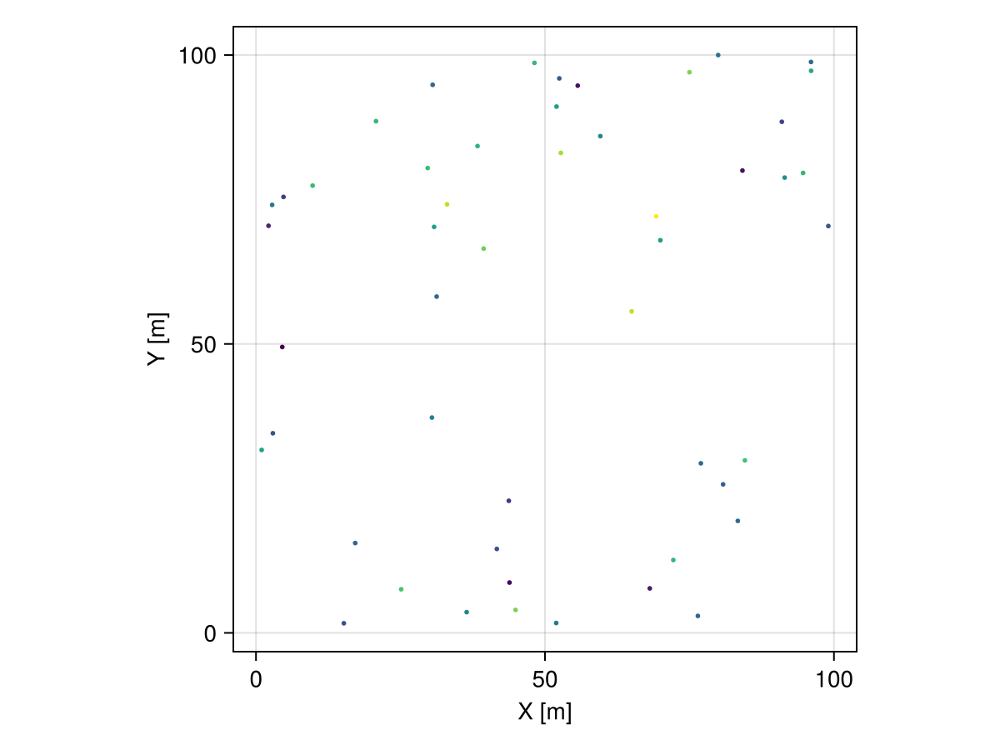
θs = range(0.0, step = π/4, stop = 2π - π/4)
# initialize figure
fig = Mke.Figure(size = (800, 1600))
# helper function to position subfigures
pos = i -> CartesianIndices((4, 2))[i].I
# domain of interpolation
grid = CartesianGrid(100, 100)
# anisotropic variogram with different rotation angles
for (i, θ) in enumerate(θs)
# anisotropic variogram model
γ = GaussianVariogram(ranges = (20.0, 5.0), rotation = Angle2d(θ))
# perform interpolation
interp = geotable |> Interpolate(grid, model=Kriging(γ))
# visualize solution at subplot i
viz(fig[pos(i)...],
interp.geometry, color = interp.Z,
axis = (title = "θ = $(rad2deg(θ))ᵒ",)
)
end
fig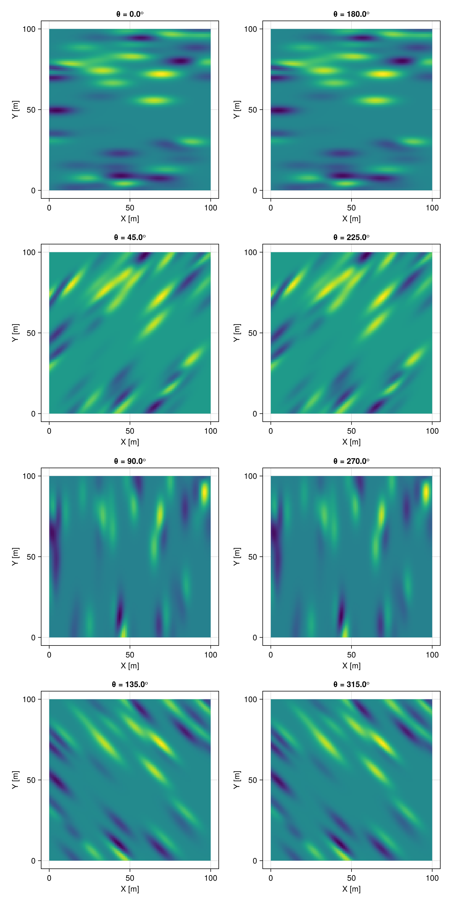
Plotting
The function funplot/funplot! can be used to plot any geostatistical function:
GeoStatsFunctions.funplot — Function
funplot(f; [options])
funplot(pos, f; [options])Plot the geostatistical function f with given options, optionally at the position pos of an existing figure or grid layout, e.g. funplot(fig[1, 2], f).
Common options:
color- color of function graphlinewidth- line width of function graphmaxlag- maximum lag distancelink- whether to link axes of subplots
Empirical function options:
linestyle- line style of function graphpointsize- size of pointsshowtext- show text countstextsize- size of text countsshowhist- show histogramhistcolor- color of histogram
Notes
This function will only work in the presence of a Makie.jl backend via package extensions in Julia v1.9 or later versions of the language.
GeoStatsFunctions.funplot! — Function
funplot!(fig, f; [options])Mutating version of [funplot[@ref] where the figure fig is updated with the plot of the geostatistical function f.
Examples
# initialize figure with Gaussian variogram
fig = funplot(GaussianVariogram())
# add spherical variogram to figure
funplot!(fig, SphericalVariogram())See the documentation of funplot for options.
Consider the following example with an anisotropic Gaussian variogram:
γ = GaussianVariogram(ranges=(3, 2, 1))GaussianVariogram
├─ ranges: (3.0 m, 2.0 m, 1.0 m)
├─ rotation: UniformScaling{Bool}(true)
├─ sill: 1.0
└─ nugget: 0.0funplot(γ)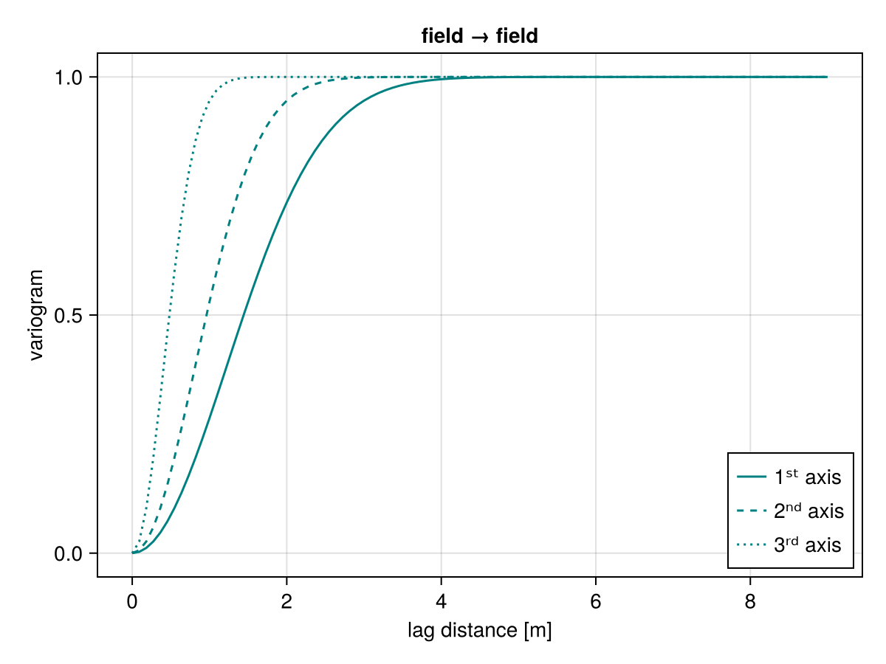
The function surfplot/surfplot! can be used to plot surfaces of association given a normal direction:
GeoStatsFunctions.surfplot — Function
surfplot(f; [options])
surfplot(pos, f; [options])Plot the geostatistical surface f with given options, optionally at the position pos of an existing figure or grid layout, e.g. surfplot(fig[1, 2], f).
Common options
colormap- Color mapmaxlag- maximum lag
Theoretical function options
normal- Normal direction to plane (default to vertical)nlags- Number of lags (default to20)nangs- Number of angles (default to50)
Examples
# initialize figure with Gaussian variogram
fig = surfplot(GaussianVariogram())
# add spherical variogram to figure
surfplot!(fig, SphericalVariogram())Notes
This function will only work in the presence of a Makie.jl backend via package extensions in Julia v1.9 or later versions of the language.
GeoStatsFunctions.surfplot! — Function
surfplot!(fig, f; [options])Mutating version of [surfplot[@ref] where the figure fig is updated with the plot of the geostatistical surface f.
See the documentation of surfplot for options.
surfplot(γ)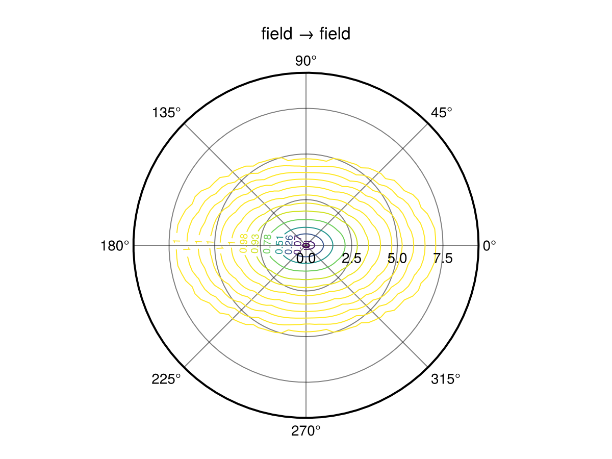
Compositing
Composite functions of the form $f(h) = c_1\cdot f_1(h) + c_2\cdot f_2(h) + \cdots + c_n\cdot f_n(h)$ can be constructed using matrix coefficients $c_1, c_2, \ldots, c_n$. The resulting CompositeFunction is multivariate depending on the size of the coefficients. The individual structures can be recovered in canonical form with the structures function:
GeoStatsFunctions.CompositeFunction — Type
CompositeFunction(cs, fs)A composite geostatistical function f = c₁f₁ + c₂f₂ + ⋯ + cₙfₙ with coefficients cs = (c₁, c₂, ..., cₙ) and geostatistical functions fs = (f₁, f₂, ..., fₙ).
GeoStatsFunctions.structures — Function
structures(γ)Return the individual structures of a (possibly composite) variogram as a tuple. The structures are the total nugget, and the coefficients (or contributions) for for the remaining non-trivial structures after normalization (i.e. sill=1, nugget=0).
Examples
γ₁ = GaussianVariogram(nugget=1, sill=2)
γ₂ = SphericalVariogram(nugget=2, sill=3)
structures(2γ₁ + 3γ₂)structures(cov)Return the individual structures of a (possibly composite) covariance as a tuple. The structures are the total nugget, and the coefficients (or contributions) for for the remaining non-trivial structures after normalization (i.e. sill=1, nugget=0).
Examples
cov₁ = GaussianCovariance(nugget=1, sill=2)
cov₂ = SphericalCovariance(nugget=2, sill=3)
structures(2cov₁ + 3cov₂)γ₁ = GaussianVariogram(nugget=1, sill=2)
γ₂ = ExponentialVariogram(nugget=2, sill=3)
# composite model with matrix coefficients
γ = [1.0 0.0; 0.0 1.0] * γ₁ + [2.0 0.5; 0.5 3.0] * γ₂
# structures in canonical form
cₒ, c, g = structures(γ)
cₒ # matrix nugget2×2 StaticArraysCore.SMatrix{2, 2, Float64, 4} with indices SOneTo(2)×SOneTo(2):
5.0 1.0
1.0 7.0c # matrix coefficients([1.0 0.0; 0.0 1.0], [2.0 0.5; 0.5 3.0])g # normalized structures(GaussianVariogram(range: 1.0 m, sill: 1.0, nugget: 0.0), ExponentialVariogram(range: 1.0 m, sill: 1.0, nugget: 0.0))funplot(γ) # multivariate funplot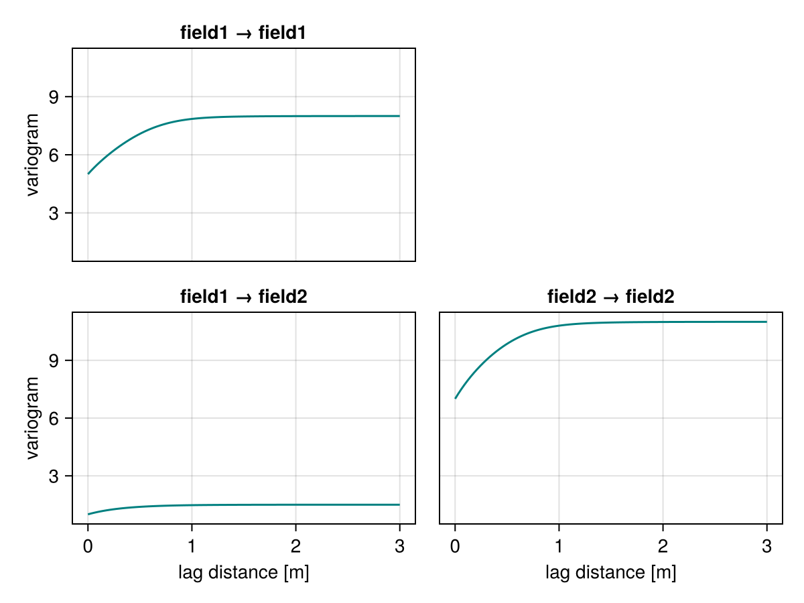
surfplot(γ) # multivariate surfplot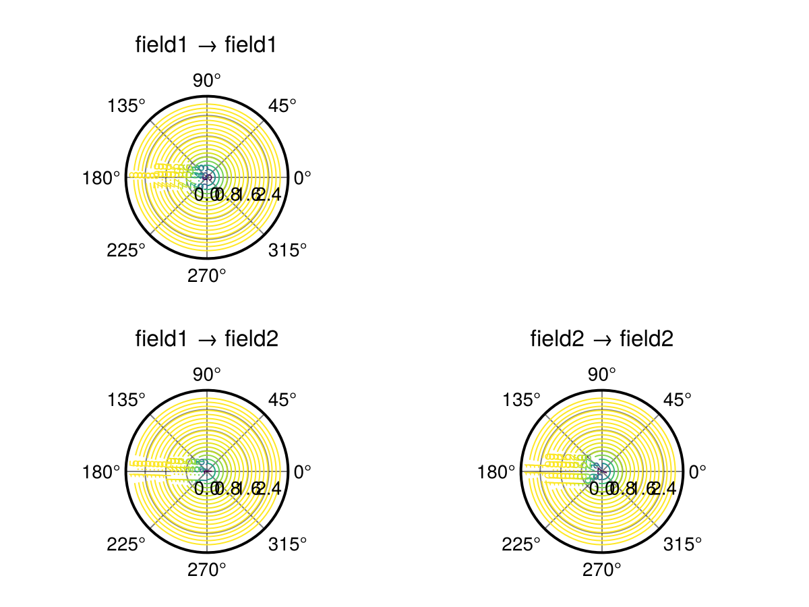
Fitting
Fitting theoretical functions to empirical functions is an important modeling step to ensure valid mathematical models of geospatial continuity:
GeoStatsFunctions.fit — Function
fit(F, f, w=inv; parameters..., maxparameters...)Fit theoretical geostatistical function of type F to empirical function f. The weighting function w is optional and maps lag distances to importance weights.
Theoretical parameters of F like range, sill and nugget as well as their maxparameters values like maxrange, maxsill and maxnugget can be fixed as keyword arguments. They are converted into optimization constraints in the weighted least squares fitting algorithm.
The type F can be abstract (e.g., Variogram, Transiogram), in which case all fittable (e.g., stationary) subtypes are fitted and the one with minimum error is returned. See fitany for custom lists of types.
fit([F₁, F₂, ..., Fₙ], f, w=inv; parameters..., maxparameters...)Alternatively, fit linear model of coregionalization (LMC) with structures of type F₁, F₂, ..., Fₙ. The result is a CompositeFunction that can be written as f = Bₒfₒ + B₁f₁ + B₂f₂ + ⋯ + Bₙfₙ where fₒ is a NuggetEffect and Bₒ, B₁, B₂, ..., Bₙ are positive semidefinite coefficient matrices.
Examples
julia> fit(SphericalVariogram, g)
julia> fit(ExponentialVariogram, g, range=1.0)
julia> fit(GaussianVariogram, g, sill=1.0, nugget=0.1)
julia> fit(ExponentialVariogram, g, maxsill=1.0)
julia> fit(SphericalVariogram, g, h -> 1/h^2)
julia> fit(Variogram, g, range=1.0)
julia> fit(Transiogram, t, h -> exp(-h))
julia> fit([SphericalVariogram, ExponentialVariogram], g)GeoStatsFunctions.fitany — Function
fitany([F₁, F₂, ..., Fₙ], f, w=inv; parameters..., maxparameters...)Fit theoretical geostatistical functions of types F₁, F₂, ..., Fₙ to empirical function f and return the one with minimum error.
Please check fit for more detailed documentation on the arguments and keyword arguments.
Examples
julia> fitany([SphericalVariogram, ExponentialVariogram], g)Consider the following empirical variogram as an example:
# sinusoidal data
img = georef((z=[sin(i/2) + sin(j/2) for i in 1:50, j in 1:50],))
# empirical variogram
g = variogram(img)
funplot(g)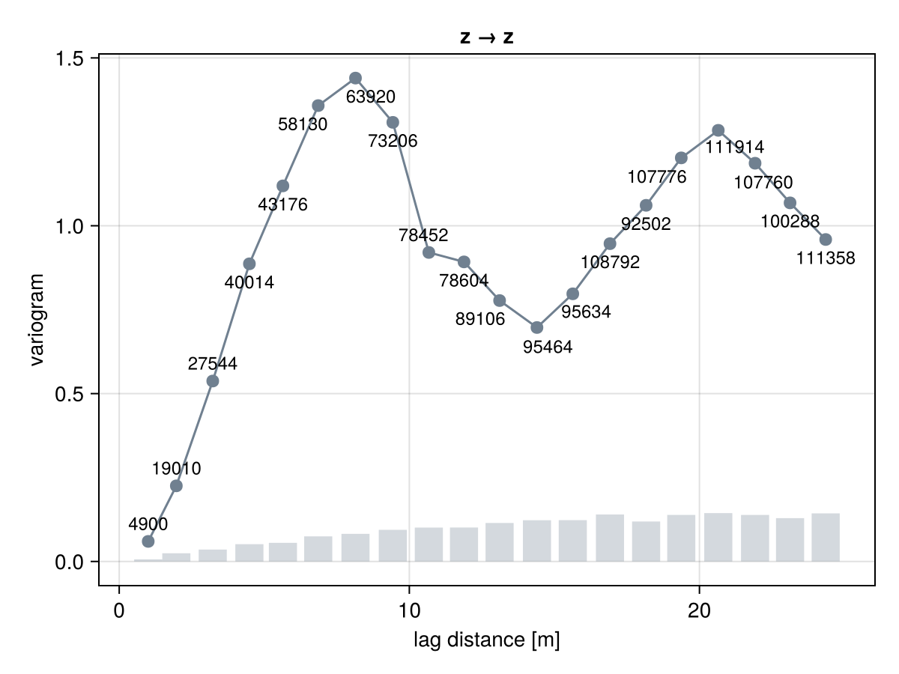
We can fit a specific theoretical variogram such as the SineHoleVariogram with
γ = GeoStatsFunctions.fit(SineHoleVariogram, g)
fig = funplot(g)
funplot!(fig, γ, maxlag = 25.0)
or we can let the framework find the theoretical variogram with minimum error:
γ = GeoStatsFunctions.fit(Variogram, g)
fig = funplot(g)
funplot!(fig, γ, maxlag = 25.0)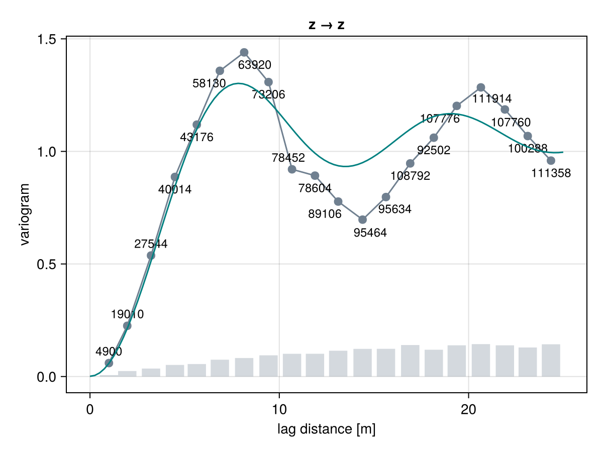
The SineHoleVariogram fits the empirical variogram well given that this is a sinusoidal field.
We can also provide any list of candidate models and let framework decide which one has the best fit:
γ = GeoStatsFunctions.fitany([GaussianVariogram, SphericalVariogram], g)
fig = funplot(g)
funplot!(fig, γ, maxlag = 25.0)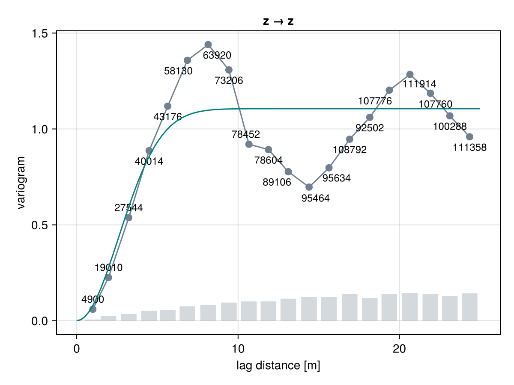
Finally, we can fix specific parameters during the optimization by passing them as keyword arguments:
γ = GeoStatsFunctions.fit(SineHoleVariogram, g, sill=1.2)
fig = funplot(g)
funplot!(fig, γ, maxlag = 25.0)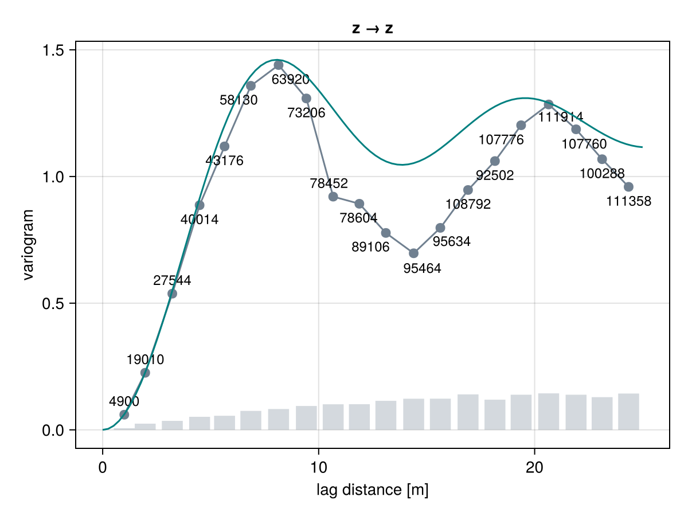
and can specify a custom weight function w(h) that informs how important is the misfit at any given lag h:
γ = GeoStatsFunctions.fit(SineHoleVariogram, g, h -> 1 / h^2)
fig = funplot(g)
funplot!(fig, γ, maxlag = 25.0)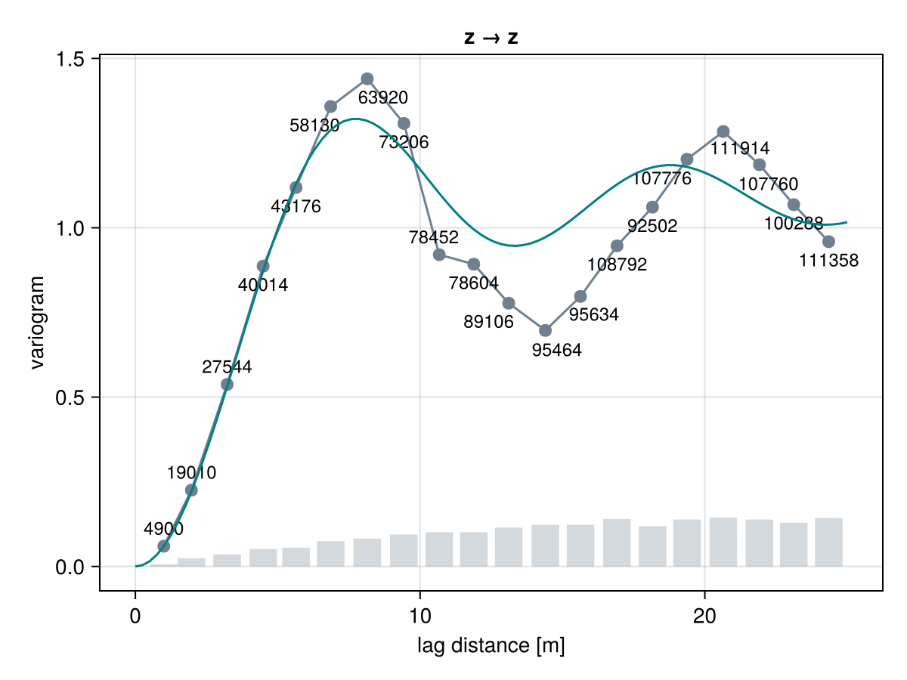